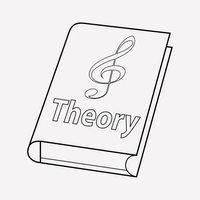

Música > Cultura
Conheça um pouco sobre Música Acadêmica
Por Giovanna Moysés
Atualizado em 06/08/2024
Música Acadêmica:
Estrutura e Composição:
Instrumentação:
Períodos Históricos:
Notação e Performance:
Estilo e Técnica:
Teoria Musical:

Esses elementos definem o campo da música acadêmica, destacando sua estrutura, evolução e complexidade.